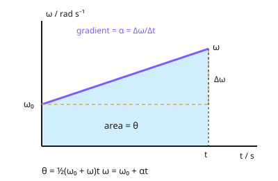

A-level Physics Year 13 · Topic 18
Rotational dynamics
Rotational dynamics applies the ideas of motion and forces to spinning objects.
We will describe rotation with angular displacement, velocity and acceleration, and use the rotational equations of motion.
Then we meet moment of inertia, torque, angular momentum and its conservation, and see how flywheels store energy.
- 5 subtopics
- 285 questions
- Free: 18.1 notes and 10 questions
In this topic
- 18.1Angular displacement, velocity and acceleration; equations of rotational motionFree below · 56 questions
- 18.2Moment of inertia and rotational kinetic energyOpen in Full Marks · 54 questions
- 18.3Torque and angular acceleration (T = Iα)Open in Full Marks · 57 questions
- 18.4Angular momentum and its conservationOpen in Full Marks · 56 questions
- 18.5Flywheels: work, power and energy storage in rotationOpen in Full Marks · 62 questions
18.1 · Free notes
Angular displacement, velocity and acceleration; equations of rotational motion

Key points
- Angular displacement (θ) is the angle turned through by a rotating body, measured in radians (rad). One full revolution = 2π rad, and 1 rad = 360°/2π ≈ 57.3°.
- Angular velocity ω = Δθ/Δt, in rad s⁻¹. It is the rate of change of angular displacement, and it is the gradient of a θ–t graph.
- Angular acceleration α = Δω/Δt, in rad s⁻². It is the gradient of an ω–t graph. It is constant in the equations of rotational motion.
- Link to frequency and period: ω = 2πf = 2π/T. To convert, rev min⁻¹ × 2π/60 = rad s⁻¹ (e.g. 45 rpm = 4.7 rad s⁻¹).
- Every point on a rigid rotating body has the same ω and α, but the linear (tangential) speed depends on radius: v = rω. The tangential acceleration is a = rα.
- The centripetal acceleration of a point at radius r is a = rω² = v²/r, directed towards the axis. It is separate from the tangential acceleration rα.
- Equations of rotational motion (constant α): ω = ω₀ + αt; θ = ½(ω₀ + ω)t; θ = ω₀t + ½αt²; ω² = ω₀² + 2αθ. These are the linear SUVAT equations with s→θ, u→ω₀, v→ω, a→α.
- On an ω–t graph, the gradient = α and the area under the graph = θ. For non-uniform sections, split the area into triangles and rectangles.
- Method for calculations: list θ, ω₀, ω, α, t, choose the equation that has no unknown variable, and take care with signs (deceleration gives negative α). Always give units (rad, rad s⁻¹, rad s⁻²).
- Common errors to avoid: using degrees or revolutions in the equations, and forgetting that rpm must be converted to rad s⁻¹. Do not confuse tangential acceleration rα with centripetal acceleration rω².
In more detail
- Worked conversion: 3000 rev min⁻¹ = 3000 × 2π ÷ 60 = 314 rad s⁻¹.
- Worked rotational SUVAT: a wheel speeds up from 20 to 50 rad s⁻¹ in 6.0 s → α = 5.0 rad s⁻²; θ = ½(20 + 50) × 6.0 = 210 rad, about 33 revolutions.
- Worked linear speed: a point 0.30 m from the axis at 314 rad s⁻¹ → v = rω = 94 m s⁻¹ and a = rω² ≈ 3.0 × 10⁴ m s⁻².
- Analogy: s ↔ θ, u ↔ ω₀, v ↔ ω, a ↔ α, t ↔ t, so every SUVAT equation has a rotational twin.
Practice
Angular displacement, velocity and acceleration; equations of rotational motion: 10 questions
Pick an answer to check it, or open the answer for the explanation.
1. A turntable rotates at 45 revolutions per minute. What is its angular velocity?
- 4.7 rad s⁻¹
- 7.5 rad s⁻¹
- 0.75 rad s⁻¹
- 283 rad s⁻¹
Show answer
A: 4.7 rad s⁻¹. 45 rev/min × 2π rad per rev ÷ 60 s per min = 4.71 rad s⁻¹. 0.75 is only the frequency in rev s⁻¹, and 283 forgets to divide by 60.
2. A wheel starts from rest and has a constant angular acceleration of 2.0 rad s⁻². Through what angle does it turn in 5.0 s?
- 12.5 rad
- 10 rad
- 50 rad
- 25 rad
Show answer
D: 25 rad. θ = ω₀t + ½αt² = 0 + ½ × 2.0 × 5.0² = 25 rad. 50 rad omits the ½, and 10 rad is the final angular velocity.
3. A point on a disc is 0.30 m from the axis and the disc rotates at 20 rad s⁻¹. What is the linear speed of the point?
- 120 m s⁻¹
- 0.015 m s⁻¹
- 67 m s⁻¹
- 6.0 m s⁻¹
Show answer
D: 6.0 m s⁻¹. v = rω = 0.30 × 20 = 6.0 m s⁻¹. 67 comes from dividing ω by r, and 120 comes from using rω².
4. A disc spinning at 40 rad s⁻¹ is brought to rest while turning through 100 rad. What is its angular acceleration (constant)?
- −0.40 rad s⁻²
- −4.0 rad s⁻²
- −16 rad s⁻²
- −8.0 rad s⁻²
Show answer
D: −8.0 rad s⁻². ω² = ω₀² + 2αθ gives 0 = 1600 + 200α, so α = −8.0 rad s⁻². The negative sign shows deceleration.
5. What does the gradient of an angular velocity–time graph represent?
- Angular acceleration
- Angular displacement
- Linear speed
- Centripetal force
Show answer
A: Angular acceleration. α = Δω/Δt, so the gradient of an ω–t graph is the angular acceleration. The area under the graph gives angular displacement.
6. A rotor's angular velocity rises uniformly from 0 to 30 rad s⁻¹ in 6.0 s, then stays constant for a further 4.0 s. What is the total angle turned through?
- 120 rad
- 300 rad
- 210 rad
- 180 rad
Show answer
C: 210 rad. Area under the ω–t graph: ½ × 30 × 6.0 = 90 rad, plus 30 × 4.0 = 120 rad. The total is 210 rad.
7. A drum makes 12 complete revolutions. What is its angular displacement?
- 38 rad
- 150 rad
- 12 rad
- 75 rad
Show answer
D: 75 rad. One revolution is 2π rad, so 12 × 2π = 75.4 rad. 38 rad is 12π, which forgets that a revolution is 2π and not π.
8. A point is 0.25 m from the axis of a wheel turning at a constant 8.0 rad s⁻¹. What is its centripetal acceleration?
- 16 m s⁻²
- 2.0 m s⁻²
- 256 m s⁻²
- 4.0 m s⁻²
Show answer
A: 16 m s⁻². a = rω² = 0.25 × 8.0² = 16 m s⁻². 2.0 is rω, and 256 is ω²/r.
9. A rigid disc rotates at constant angular velocity. Which statement is correct?
- Points nearer the axis have a greater ω
- Points further out have a smaller ω
- All points have the same linear speed
- All points have the same ω but different linear speeds
Show answer
D: All points have the same ω but different linear speeds. A rigid body turns through the same angle in the same time at every point, so ω is the same everywhere. Since v = rω, v increases with radius.
10. A fan blade completes one rotation every 0.040 s. What is its angular velocity?
- 157 rad s⁻¹
- 25 rad s⁻¹
- 0.25 rad s⁻¹
- 314 rad s⁻¹
Show answer
A: 157 rad s⁻¹. ω = 2π/T = 2π/0.040 = 157 rad s⁻¹. 25 is the frequency in Hz, and 314 comes from using 4π.
Keep going in Full Marks
Full Marks has 56 questions on Angular displacement, velocity and acceleration; equations of rotational motion (46 more than here), set out in practice levels. You also get notes and 3D models for all 5 subtopics of Rotational dynamics, plus games, timed exams and past papers.
On your exam board
Not in the OCR A, OCR B, Edexcel and Cambridge specifications.